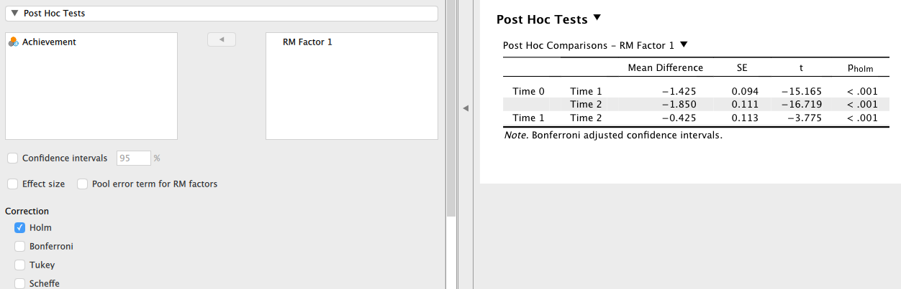
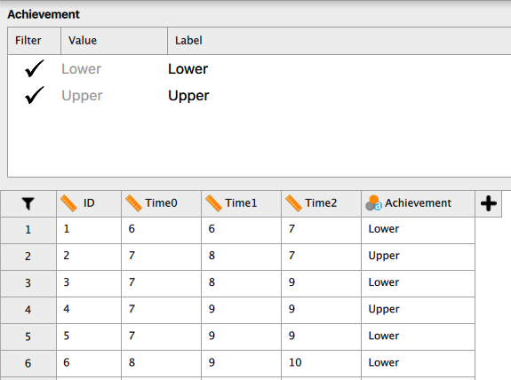

Next: 回帰分析 Up: JASPについて Previous: 分散分析（対応あり）
対応のある一要因の分散分析（Section 8）で用いたデータ alrepeat.csv を再度用いることにする。 このデータには Achievement という変数が格納されていた。 これは、生徒をその学力水準で低群（Lower）と高群（Upper）に分けたものであるから、当然対応のない要因である。
そこで、学習意欲得点を従属変数とし、測定時期（Time）を対応のある要因、学力水準（Achievement）を対応のない要因としたいわゆる二要因混合計画のデータとして分散分析を行ってみることにしよう。
[ANOVA] メニューから [Repeated Measures ANOVA] を選択し、Time0, Time1, Time2 を [Repeated Measures Cells] に移動させるところまでは対応のある一要因の分析と同じである。
次に、対応のない要因である Achievement を、[Between Subject Factors] に移動させる。 すると、以下のような分散分析表が表示される。
まず、測定時間の主効果と、測定時間と学力水準の交互作用に関する検定結果が、上部の [Within Subjects Effects] にそれぞれ [RM Factor 1] および [RM Factor 1 ＊ Achievement] として表示されている。
ここでは、これら主効果と交互作用のいずれもが5%水準で有意という結果になっている（測定時間の主効果
,  ; 測定時間と学力水準の交互作用
, ）。
; 測定時間と学力水準の交互作用
, ）。
次に、学力水準の主効果は、下部の [Between Subjects Effects] に Achievement として表示されている。 ここでは、5%水準で有意ではないという結果になっている（ , ）。
ここで、対応のない要因と対応のある要因とでは何がその大きさを評価する上での「誤差（residual）」として働くかが異なるということに注意しよう。 対応のない要因については、同じ水準において見られる従属変数（この場合であれば学習意欲）の得点そのものの個人差が「誤差」の働きをするのに対し、対応のある要因については、異なる水準にわたって見られる従属変数の変化の個人差が「誤差」の働きをする。
今の例に即して言えば、学力水準（Achievement）の高低によって学習意欲に差が見られるかを検証する場合には、学力水準の高群・低群それぞれにおける学習意欲のばらつき具合（を合算したもの）が誤差であり、測定時期（Time）によって学習意欲に差が見られるかを検証する場合には、Time 0 から Time 2 に至るまで個人の学習意欲がどのように変化したのか、その軌跡の多様さが誤差として扱われることになる。 なお、ここでの交互作用（学力水準の高低によって学習意欲の変化の仕方に違いが見られるか）のように、1つでも対応のある要因と絡んでいるものについては、対応のある要因の誤差を用いて検定されることになっている。
二要因混合計画に限らず、実験計画の中に対応のある要因が含まれている場合は誤差の選択が検定において重要な検討事項になるので、特に誤差自由度の選択を誤らないように注意が必要である。
交互作用が有意であったので主効果の解釈には注意が必要であるが、とりあえず測定時期（Time）の主効果について多重比較を行っておこう。 やり方は対応のある一要因の場合と同様である。 [Post Hoc Tests] メニューを開き、測定時期（RM Factor 1）を右側のボックスに移動させればよい。 結果は次の通り。
この結果を、対応のある一要因の結果（Section 8.3）と見比べてほしい。
全く同じであることに気づいただろうか。
ここでも、 統計量の算出には該当する2群を対応のあるデータとして取り出し比較した場合の自由度を用いる。
この例ではいずれの水準にも40名の生徒がいるのであるから、自由度はここから1を引いた39である。
統計量の算出には該当する2群を対応のあるデータとして取り出し比較した場合の自由度を用いる。
この例ではいずれの水準にも40名の生徒がいるのであるから、自由度はここから1を引いた39である。

交互作用が有意であったことから、単純主効果について検証しておこう。
まず、交互作用プロットの確認をしておく。 [Description Plots] の [Factors] から測定時期（RM Factor 1）を [Horizontal Axis] へ、学力水準（Achievement）を [Separate Lines] に移動させれば、「学習意欲得点の測定時期による変化を学力水準別にプロットしたもの」を確認することができる。 デフォルトでは縦軸は空欄になっているが、表示させる必要があれば [Label y-axis] に入力すれば良い。
このプロットを見る限り、学力水準の高低で確かに学習意欲の変化には違いがあるよう（高群の方が Time 0 から Time 1 への上昇が急で、Time 1 から Time 2 への変化が緩やかに見える）だが、いずれの群でも時間とともに学習意欲が向上しているという傾向に関しては大きな相違はないようである。
これを踏まえて、「学力水準の高低別に測定時期の単純主効果を検証」することにしてみよう。 [Simple Main Effects] において [Simple Effect Factor] に測定時期（RM Factor 1）を、[Moderator Factor 1] に学力水準（Achievement）を左のボックスから移動させれば良い。
検定結果は以下の通りである。 学力水準の高・低いずれについても時間を経るに従って学習意欲が有意に上昇するという結果になっている。
では、ここでの検定における誤差には何が用いられているのだろうか。 対応のない2要因の場合は誤差は [Residual] として1つしか存在しなかったが、二要因混合計画では [Residual] は対応ありの要因用と対応なしの要因用の2種類存在している。 今の例では対応ありの要因である測定時期（RM Factor 1）の単純主効果を検証しているので、分散分析表の上側の [Residual] を用いており誤差の自由度は 76 になると思うかもしれないが、実はそうではない。
実は、ここでの単純主効果は学力水準（Achievement）の高群（Upper）と低群（Lower）にデータを分割し、それぞれについて対応のある一要因の分散分析を行った場合の誤差を用いて検定が行われている。 そうすると、今の場合は高群（Upper）の生徒20名について3回の観測を行ったデータと、低群（Lower）の生徒が20名に3回の観測を行ったデータということになるから、誤差の自由度はいずれも (対応のある要因の水準数-1)×(20-1) = 2 × 19 = 38 となる。
例えば、学力水準の高群における測定時期の単純主効果の検定結果は、
,  と表せることになる。
と表せることになる。
このことを確認するために、実際にこのデータから学力水準の高群のデータのみを取り出して対応のある一要因分散分析を行ってみよう。 データ入力画面で変数名（Achievement）をクリックすると、次のような画面が開くはずである。

この画面で、左側の [Filter] とあるところのチェックマークを [Lower] についてクリックしてみよう。 次のように、チェックマークが "X" に変わるはずである。 入力されたデータを見ると、Achievement が Upper であるデータだけが黒字になっていて、Lower のデータはグレーアウトしている。 これは、学力水準が高群のデータだけが分析対象に設定されたということを意味する。
この状態で、測定時期のみを対応のある要因とした分散分析を実行してみよう。
ここに表示された分散分析表の上側にある [Residual] が、先ほどの学力水準が高群の場合における観測時期の単純主効果を検定する際に用いられた部分である。
分散分析表を1つにまとめてみよう。
 は平均平方の比であるから、誤差平均平方は観測時期の平均平方を
は平均平方の比であるから、誤差平均平方は観測時期の平均平方を で割ってやればよい。
この値は
となり、確かに誤差平均平方と一致している。
で割ってやればよい。
この値は
となり、確かに誤差平均平方と一致している。
| 要因 | 平方和 （Sum of Squares） | 自由度（df） | 平均平方（Mean Square） | ||
| 観測時期（RM Factor 1） | 42.233 | 2 | 21.117 | 88.179 | |
| 誤差（Residual） | 9.100 | 38 | 0.239 |
Taichi Okumura